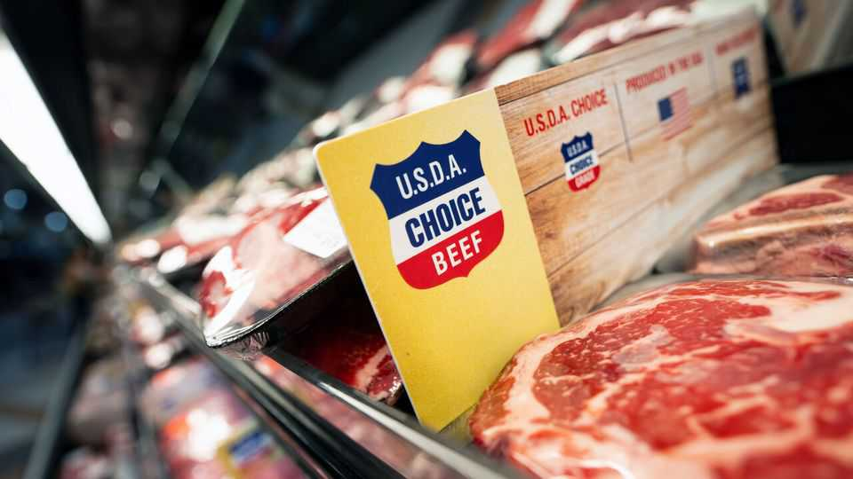

Beef has never been pricier—and meatpackers are suffering
Donald Trump is going after the wrong suspects

Sep 10th 2026
SINCE 2020 the price of beef in America’s shops has soared by around 70%, more than twice the general inflation rate. Americans are disgruntled, and the president knows whom to blame: the middlemen. Meatpackers, who buy cattle from farmers and turn steers into beef, “are a nasty monopoly”, Donald Trump declared on Truth Social last month.
The industry certainly is concentrated. Just four companies—Tyson Foods, Cargill, JBS and National Beef—slaughter 85% of America’s cattle. Trustbusters have had the oligopoly in their sights for some time now. Tyson, Cargill and JBS have each settled lawsuits in America alleging they fixed prices between 2014 and 2022. (All firms have denied wrongdoing.)
Yet despite record beef prices, the “Big Processors”, as Mr Trump calls them, are not thriving. Shares in Tyson, the largest, have tumbled by 40% since 2021—and by 7% since it cut its earnings forecast on September 3rd. It now expects its beef business, which brings in 40% of revenue, to lose as much as $775m this year. Trouble in the division has dragged the company’s overall operating margin down from 8.5% in 2021 to 2.6%. JBS, which is Brazilian, has said its North American business lost $427m in the first half of 2026.
“Beef is a boom and bust industry, in part because it is at the mercy of biological cycles,” says Joshua Specht, author of “Red Meat Republic”, a book tracing its history. Usually a bust begins with a drought, which pushes up the cost of feed, prompting ranchers to reduce their herds. When cattle become scarce, prices rise, which encourages them to increase herds again. Because herds take about five years to rebuild, a typical cycle in the industry lasts for about a decade.
This cycle largely explains meatpackers’ current troubles. By 2014, years of drought had forced American ranchers to cut their herds. Cattle then became scarce. “When prices peaked, ranchers all jumped in and started growing their herds as quickly as possible, and basically crashed the market in a very short space of time,” says Alexia Howard of Bernstein, a broker. There is no sign yet that ranchers are rebuilding. “Everybody’s got this once-bitten, twice-shy mentality,” says Ms Howard.

Since 2020 America’s herd has shrunk by nearly a tenth, to its smallest since 1951, and the price of a steer has risen by 120%. Meatpackers are thus paying more than ever to fill their slaughterhouses. But on the other side, retail prices have not kept up. As beef has become dearer, shoppers have turned to chicken, the price of which has remained stable, adjusting for inflation (see chart).
To cut costs, meatpackers are taking a knife to their operations. In August Tyson shut factories in Illinois and Utah, cutting around 3,200 jobs and about 15% of its beef-processing capacity. This year Cargill has closed a plant in Wisconsin. JBS has shut facilities in Pennsylvania and Tennessee, shedding 2,000 jobs.
But they will keep bleeding—and beef will stay pricey—until ranchers rebuild their herds. Mr Trump is reluctant to say so: after all, many of them voted for him. Instead, on August 31st his agriculture secretary announced the Ranchers First Initiative, which makes it easier for farmers to bypass middlemen by processing their own meat, and also provides financial support to small slaughterhouses. None of this will make much of a difference to prices, argues David Anderson of Texas A&M University: “The numbers would be so small…it wouldn’t change the broader market at all.” American consumers hoping for some relief may be waiting until the cows come home. ■